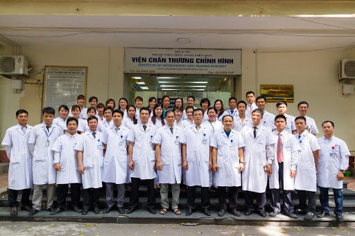
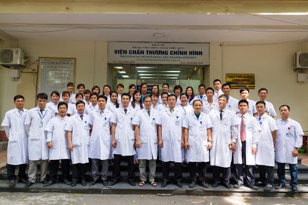

Viện dinh dưỡng quốc gia
Viện Dinh Dưỡng được thành lập theo Quyết định số 181/CP ngày 13/06/1980 của Hội đồng Chính phủ. Quyết định số 230/1998/QĐ-TTg ngày 30/11/1998 của Thủ tướng Chính phủ đã xếp Viện Dinh Dưỡng là một trong 6 viện toàn quốc của ngành y tế.
Viện được giao các nhiệm vụ nghiên cứu nhu cầu dinh dưỡng và cơ cấu bữa ăn người Việt Nam, đề xuất cho Nhà nước các biện pháp tăng cường sức khỏe, phòng bệnh, chữa bệnh phù hợp với nhu cầu dinh dưỡng và điều kiện phát triển kinh tế xã hội của đất nước từng giai đoạn; phân tích giá trị dinh dưỡng của thực phẩm; nghiên cứu vệ sinh ăn uống, kiểm nghiệm thực phẩm; dinh dưỡng điều trị và đồng thời đào tạo cán bộ dinh dưỡng cho đất nước.
Sự ra đời của Viện Dinh dưỡng đánh dấu một mốc quan trọng đối với ngành dinh dưỡng Việt Nam. Các Viện trưởng qua các thời kỳ gồm có GS. Từ Giấy - Thầy thuốc nhân dân, Anh hùng Lao động (1980-1993); GS, TSKH Hà Huy Khôi -Nhà giáo Nhân dân (1993-2002); GS, TS. Nguyễn Công Khẩn-Thầy thuốc ưu tú (2002-2008), GS.TS Lê Thị Hợp - Thầy thuốc ưu tú (2008 - 2013) và hiện nay là PGS. TS Lê Danh Tuyên - Thầy thuốc ưu tú.
Viện Dinh Dưỡng đã được Nhà nước tặng thưởng 2 huân chương lao động hạng Nhì, hạng Nhất và nhiều bằng khen của Bộ Y tế, Bộ Khoa học Công nghệ và Môi trường, Bộ Lao động-Thương binh-Xã hội, Tổng Liên đoàn Lao động Việt Nam và của Thành phố Hà Nội. Năm 2005 Viện được tặng cờ thi đua của Bộ Y tế, năm 2006 cờ thi đua của Chính phủ. Đảng bộ Viện Dinh dưỡng được Thành ủy Hà Nội tặng cờ Đảng bộ trong sạch vững mạnh 5 năm liền 1997-2002 và các năm tiếp theo. Công đoàn được Chính phủ tặng Bằng khen các năm 2004-2007 và liên tục được tặng Cờ công đoàn vững mạnh 1993-2007. Năm 2008, Viện Dinh dưỡng vinh dự được Chủ tịch nước tặng thưởng Huân chương Độc lập hạng Ba. Do có những đóng góp to lớn và hiệu quả nói trên, ngày 11/9/2010, Viện Dinh dưỡng đã được Chủ tịch nước phong tặng danh hiệu Anh hùng Lao động. Đây là một vinh dự to lớn đối với các thế hệ cán bộ của Viện, là sự ghi nhận của Đảng và Nhà nước đối với những đóng góp to lớn của các thế hệ cán bộ khoa học Viện Dinh dưỡng đối với sự nghiệp chăm lo và bảo vệ sức khỏe của Nhân dân.